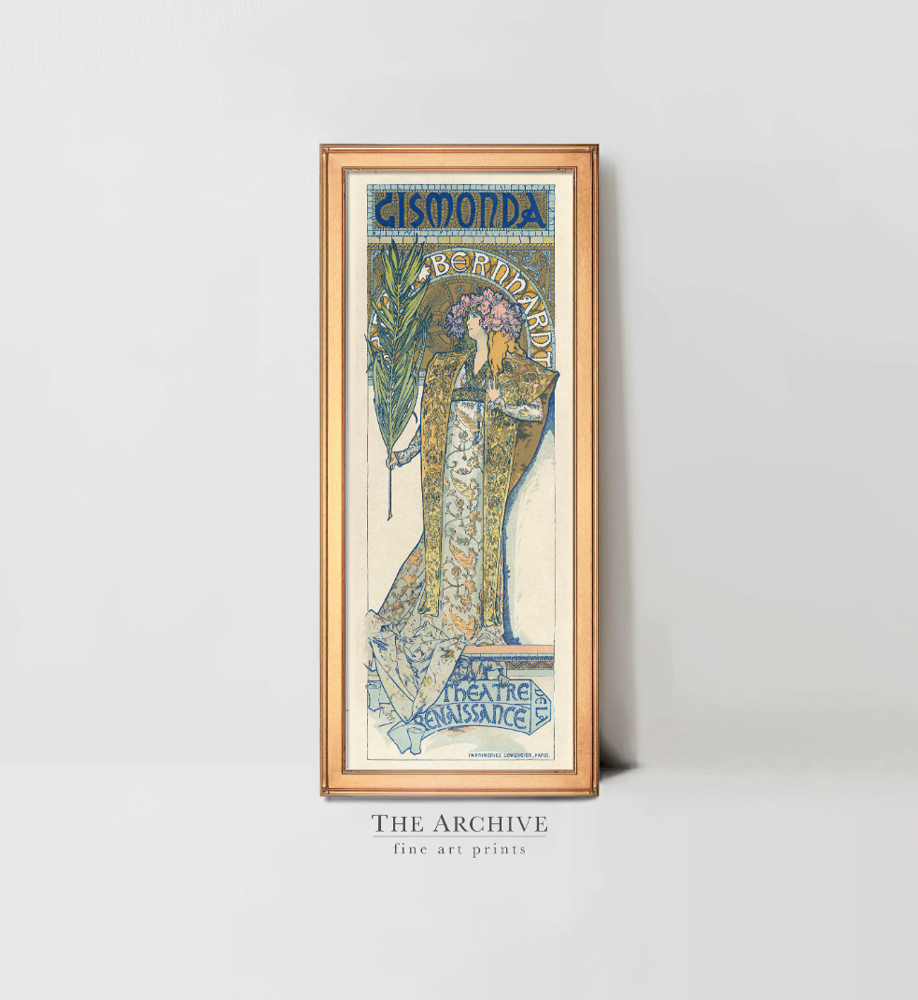

História do Design
Das origens da comunicação visual à era digital
Esta apostila oferece uma introdução abrangente à história do design, desde os primeiros registros visuais da humanidade até as transformações provocadas pela revolução digital. O design é uma atividade tão antiga quanto a própria civilização – sempre que alguém planejou a forma de um objeto ou organizou informações de maneira visual, estava praticando design. Neste material, exploraremos os momentos decisivos, os movimentos, os designers e as obras que moldaram o campo, com ênfase nas transformações sociais, tecnológicas e culturais que impulsionaram cada mudança.
1. As origens: da comunicação visual primitiva à invenção da escrita
Antes mesmo de existir a palavra "design", os seres humanos já se preocupavam em dar forma visual a ideias e conceitos. As primeiras manifestações do design estão nas pinturas rupestres, nos petróglifos e nos objetos utilitários decorados.
 Figura 1 – Pintura rupestre de Lascaux. Os primeiros traçados humanos mostram a necessidade de registrar informações visualmente, combinando figuras de animais e símbolos abstratos.
Figura 1 – Pintura rupestre de Lascaux. Os primeiros traçados humanos mostram a necessidade de registrar informações visualmente, combinando figuras de animais e símbolos abstratos.
A escrita foi um marco fundamental. Os sumérios, por volta de 3100 a.C., desenvolveram a escrita cuneiforme em tabuletas de argila. Os egípcios criaram os hieróglifos, combinando pictogramas e fonogramas em papiros ilustrados, como o Livro dos Mortos. Esses sistemas não eram apenas funcionais – já havia uma preocupação estética com a organização do espaço, a hierarquia visual e a integração entre texto e imagem.
 Figura 2 – Tabuleta suméria. A escrita cuneiforme usava um estilete triangular para criar marcas em forma de cunha.
Figura 2 – Tabuleta suméria. A escrita cuneiforme usava um estilete triangular para criar marcas em forma de cunha.
2. O alfabeto e a tipografia na Antiguidade e Idade Média
Os fenícios desenvolveram um alfabeto de 22 caracteres por volta de 1500 a.C., simplificando a comunicação escrita. Os gregos adaptaram esse alfabeto, acrescentando vogais e criando as primeiras inscrições monumentais. Os romanos, por sua vez, legaram à posteridade as capitais monumentais – letras com serifas elegantes, proporções harmoniosas e traços grossos e finos, como na famosa Coluna de Trajano (114 d.C.).
 Figura 3 – As capitais romanas da Coluna de Trajano são um marco do design de letras, com proporções que inspiram designers até hoje.
Figura 3 – As capitais romanas da Coluna de Trajano são um marco do design de letras, com proporções que inspiram designers até hoje.
Na Idade Média, os manuscritos iluminados produzidos em mosteiros atingiram níveis extraordinários de riqueza visual. O Livro de Kells (c. 800 d.C.), criado por monges celtas, combina caligrafia intricada, ornamentos entrelaçados e ilustrações vibrantes. Os escribas medievais também desenvolveram a minúscula carolíngia (século IX), que padronizou a escrita e se tornou precursora das nossas letras minúsculas atuais.
 Figura 4 – O Livro de Kells é um dos mais belos manuscritos iluminados, com padrões entrelaçados e cores vibrantes.
Figura 4 – O Livro de Kells é um dos mais belos manuscritos iluminados, com padrões entrelaçados e cores vibrantes.
3. A invenção da imprensa e a tipografia europeia
Em meados do século XV, o ourives alemão Johann Gutenberg inventou os tipos móveis de metal e a prensa tipográfica. A Bíblia de 42 linhas (1455) é o primeiro livro impresso com essa técnica, um marco na história da comunicação. A tipografia tornou possível a produção em massa de livros, democratizando o conhecimento e acelerando o Renascimento, a Reforma e a Revolução Científica.
 Figura 5 – A Bíblia de Gutenberg é considerada o primeiro livro impresso com tipos móveis no Ocidente.
Figura 5 – A Bíblia de Gutenberg é considerada o primeiro livro impresso com tipos móveis no Ocidente.
Nas décadas seguintes, a impressão se espalhou pela Europa. Na Itália, Nicolas Jenson desenvolveu tipos romanos elegantes; em Veneza, Aldo Manuzio criou os tipos itálicos e publicou edições portáteis dos clássicos. Na França, Claude Garamond projetou tipos que se tornaram referência para a tipografia ocidental por séculos.
4. Revolução Industrial e o surgimento do design profissional
A Revolução Industrial (séculos XVIII-XIX) transformou a produção de objetos. Surgiram novas técnicas de fabricação, novos materiais (ferro fundido, aço, vidro plano) e uma nova classe de consumidores urbanos. O design passou a ser uma atividade distinta da execução artesanal.
 Figura 6 – A máquina a vapor impulsionou a produção industrial e criou demanda por novos produtos e novas formas.
Figura 6 – A máquina a vapor impulsionou a produção industrial e criou demanda por novos produtos e novas formas.
Na cerâmica, Josiah Wedgwood (1730-1795) inovou ao separar o projeto da execução, criando um sistema de produção que valorizava o design como diferencial competitivo. Sua fábrica produzia louças de alta qualidade a preços acessíveis, e ele empregava artistas como John Flaxman para projetar formas e decorações.
4.1 A Grande Exposição de 1851 e o Palácio de Cristal
Realizada em Londres, a Grande Exposição foi um marco na história do design. O edifício que a abrigou, o Palácio de Cristal projetado por Joseph Paxton, era feito de ferro e vidro, prenunciando a arquitetura moderna. A exposição revelou a necessidade de melhorar o design dos produtos industriais, gerando debates que levaram à fundação de escolas e museus de design.
 Figura 7 – O Palácio de Cristal foi uma obra-prima da engenharia e do design, usando materiais industrializados.
Figura 7 – O Palácio de Cristal foi uma obra-prima da engenharia e do design, usando materiais industrializados.
5. Movimentos de reforma: Arts and Crafts e Art Nouveau
Como reação à qualidade muitas vezes baixa dos produtos industriais, surgiram movimentos que buscavam resgatar o valor do trabalho manual e da beleza. O Arts and Crafts, liderado por William Morris (1834-1896) na Inglaterra, defendia o retorno ao artesanato, a honestidade dos materiais e a integração entre arte e vida cotidiana. Morris fundou a Kelmscott Press, que produzia livros de altíssima qualidade tipográfica e ilustração.
 Figura 8 – William Morris criou padrões decorativos que se tornaram ícones do movimento Arts and Crafts.
Figura 8 – William Morris criou padrões decorativos que se tornaram ícones do movimento Arts and Crafts.
O Art Nouveau (c. 1890-1910) foi o primeiro estilo internacional moderno. Caracterizado por linhas orgânicas e sinuosas inspiradas na natureza, o Art Nouveau se manifestou em cartazes (Jules Chéret, Alphonse Mucha, Toulouse-Lautrec), arquitetura (Victor Horta, Antoni Gaudí) e objetos decorativos (Emile Gallé, Louis Comfort Tiffany).

Figura 9 – Mucha elevou o cartaz à categoria de arte, com figuras femininas idealizadas e padrões florais.6. As vanguardas e a Bauhaus
O início do século XX foi marcado por movimentos artísticos que influenciaram profundamente o design: Cubismo (Picasso, Braque), Futurismo (Marinetti), Dadaísmo (Tristan Tzara), Construtivismo (El Lissitzky, Rodchenko) e De Stijl (Mondrian, Van Doesburg). Esses movimentos rejeitaram a representação naturalista e exploraram a abstração, a geometria e a tipografia expressiva.
 Figura 10 – O construtivismo usava formas geométricas e cores primárias para transmitir mensagens políticas e sociais.
Figura 10 – O construtivismo usava formas geométricas e cores primárias para transmitir mensagens políticas e sociais.
6.1 A Bauhaus (1919-1933)
A Bauhaus, fundada por Walter Gropius em Weimar, foi a escola de design, arte e arquitetura mais influente do século XX. Seu currículo integrava arte, artesanato e tecnologia, e seus mestres incluíam nomes como Wassily Kandinsky, Paul Klee, László Moholy-Nagy, Josef Albers e Herbert Bayer. A Bauhaus defendia a união entre arte e indústria, a funcionalidade e a eliminação do ornamento supérfluo.
 Figura 11 – O prédio da Bauhaus em Dessau é um ícone da arquitetura modernista, com suas cortinas de vidro e formas geométricas.
Figura 11 – O prédio da Bauhaus em Dessau é um ícone da arquitetura modernista, com suas cortinas de vidro e formas geométricas.
Na tipografia, Herbert Bayer propôs um alfabeto universal sem serifa, abolindo as maiúsculas. Jan Tschichold, com seu livro Die Neue Typographie (1928), sistematizou os princípios da tipografia moderna: assimetria, uso de sans-serif, grids e contraste de tamanhos e pesos.
7. O design na era industrial e o styling americano
Nos Estados Unidos, o design assumiu uma face mais comercial. Raymond Loewy (1893-1986), Henry Dreyfuss, Walter Dorwin Teague e Norman Bel Geddes aplicaram o design a produtos de consumo, desde locomotivas até refrigeradores. Eles popularizaram o styling (estilização) – a atualização periódica da aparência de produtos para estimular o consumo, princípio que deu origem à obsolescência planejada.
 Figura 12 – Loewy aplicou o streamlining (aerodinamismo estilizado) a produtos, tornando-os mais modernos e atraentes.
Figura 12 – Loewy aplicou o streamlining (aerodinamismo estilizado) a produtos, tornando-os mais modernos e atraentes.
8. O Estilo Tipográfico Internacional (Escola Suíça)
Nas décadas de 1950 e 1960, a chamada Escola Suíça (ou Estilo Tipográfico Internacional) dominou o design gráfico. Liderada por Josef Müller-Brockmann, Armin Hofmann e Emil Ruder, essa abordagem enfatizava a clareza, a objetividade e o uso sistemático de grids matemáticos. Tipografia sans-serif (especialmente Helvetica e Univers), alinhamento à esquerda e fotografia objetiva eram seus elementos característicos.
 Figura 13 – O design suíço valorizava a ordem, a legibilidade e a comunicação impessoal.
Figura 13 – O design suíço valorizava a ordem, a legibilidade e a comunicação impessoal.
9. Identidade corporativa e sistemas visuais
A partir dos anos 1950, grandes empresas perceberam o valor do design para construir uma imagem consistente. Programas de identidade corporativa foram desenvolvidos para a IBM (por Paul Rand), a CBS (William Golden), a Olivetti (Giovanni Pintori) e a Lufthansa (Otl Aicher). Esses sistemas unificavam logotipos, cores, tipografia e aplicações em todos os pontos de contato da empresa com o público.
 Figura 14 – Paul Rand criou marcas atemporais que combinavam geometria, cor e simbolismo.
Figura 14 – Paul Rand criou marcas atemporais que combinavam geometria, cor e simbolismo.
No Brasil, Aloísio Magalhães (1927-1982) se destacou como um dos mais importantes designers de identidade visual, com projetos para o Banco Boavista, a Petrobrás e o próprio IPHAN. Ele também foi fundamental na valorização do design como política cultural.
10. Contracultura, psicodelismo e o design pós-moderno
Nos anos 1960, a contracultura e o movimento hippie trouxeram uma estética vibrante e irreverente. Cartazes psicodélicos (Wes Wilson, Victor Moscoso, Peter Max) exploravam letras onduladas, cores fluorescentes e sobreposições. O Push Pin Studios (Milton Glaser, Seymour Chwast) resgatou estilos históricos (vitoriano, art nouveau, art déco) com uma abordagem eclética e bem-humorada.
 Figura 15 – O cartaz de Bob Dylan, com inspiração art nouveau, foi distribuído em milhões de cópias.
Figura 15 – O cartaz de Bob Dylan, com inspiração art nouveau, foi distribuído em milhões de cópias.
O pós-modernismo nos anos 1980 questionou os dogmas modernistas. Designers como Wolfgang Weingart, April Greiman e Neville Brody experimentaram com tipografia desconstruída, sobreposições, texturas e manipulações digitais. O grupo Memphis (Ettore Sottsass) trouxe cores vibrantes e formas irreverentes para o design de produtos.
11. A revolução digital e o design contemporâneo
O computador pessoal transformou radicalmente o design a partir dos anos 1980. Programas como Adobe Photoshop (1990), Illustrator e QuarkXPress permitiram manipular imagens, criar layouts complexos e trabalhar com tipografia digital. Surgiram novas famílias tipográficas (como a Emigre de Zuzana Licko e Rudy VanderLans), e o design de interfaces (UI/UX) se tornou uma especialidade essencial.
 Figura 16 – O Macintosh popularizou a interface gráfica com ícones e tipografia bitmap.
Figura 16 – O Macintosh popularizou a interface gráfica com ícones e tipografia bitmap.
A internet e a web criaram novas demandas: design de sites, experiências interativas, responsividade e acessibilidade. Hoje, o design gráfico se expandiu para o motion design, o design de jogos, a realidade virtual e aumentada, e o design de serviços.
🎯 Micro-atividade: Linha do tempo do design
Crie uma linha do tempo ilustrada com os principais movimentos e marcos históricos do design, desde a invenção da escrita até a era digital. Para cada período, identifique um objeto ou impresso representativo e descreva suas características formais e tecnológicas.
12. Design no Brasil: trajetória e desafios
O design brasileiro tem uma história rica, ainda que muitas vezes marginalizada nas narrativas internacionais. Desde o Barroco e o mobiliário dos séculos XVIII e XIX, passando pela produção gráfica de Ângelo Agostini na Revista Ilustrada (1876), até os modernistas da Semana de Arte Moderna de 1922, o país desenvolveu uma cultura visual singular.
 Figura 17 – A revista Klaxon foi um dos veículos do modernismo paulista, com projeto gráfico inovador.
Figura 17 – A revista Klaxon foi um dos veículos do modernismo paulista, com projeto gráfico inovador.
Na década de 1950, o mobiliário brasileiro ganhou projeção internacional com nomes como Joaquim Tenreiro, Sérgio Rodrigues (criador da poltrona Mole) e José Zanine Caldas. No design gráfico, Alexandre Wollner e Aloísio Magalhães foram pioneiros na identidade visual corporativa. A ESDI (Escola Superior de Desenho Industrial), fundada em 1963 no Rio de Janeiro, formou gerações de designers e consolidou o ensino da área no país.
 Figura 18 – A poltrona Mole combina madeira maciça e couro, com formas inspiradas na cultura brasileira.
Figura 18 – A poltrona Mole combina madeira maciça e couro, com formas inspiradas na cultura brasileira.
Resumo para consulta
- Pré-escrita: pinturas rupestres e petróglifos – primeiros registros visuais.
- Escrita: sumérios (cuneiforme), egípcios (hieróglifos), fenícios (alfabeto).
- Manuscritos iluminados: Livro de Kells, minúscula carolíngia.
- Gutenberg: tipos móveis, Bíblia de 42 linhas (1455).
- Revolução Industrial: separação entre projeto e execução, Wedgwood, Grande Exposição de 1851.
- Arts and Crafts: William Morris, reação à industrialização, valorização do artesanato.
- Art Nouveau: linhas orgânicas, Mucha, Toulouse-Lautrec, Horta, Gaudí.
- Vanguardas: cubismo, futurismo, dadaísmo, construtivismo, De Stijl.
- Bauhaus: integração arte-indústria, Gropius, Kandinsky, Moholy-Nagy, Bayer.
- Escola Suíça: grid, sans-serif, clareza, Müller-Brockmann, Hofmann.
- Identidade corporativa: Paul Rand (IBM), Aloísio Magalhães (Brasil).
- Pós-modernismo: Weingart, Greiman, Memphis, Brody.
- Revolução digital: computadores, internet, UI/UX, design responsivo.